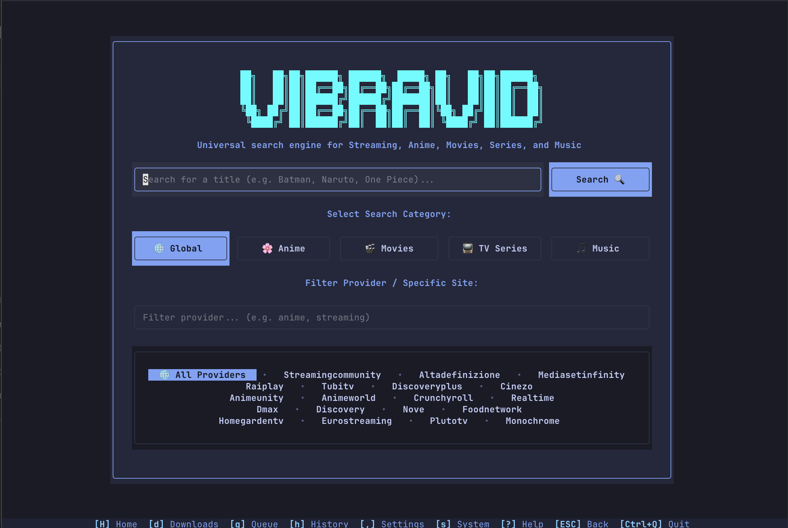
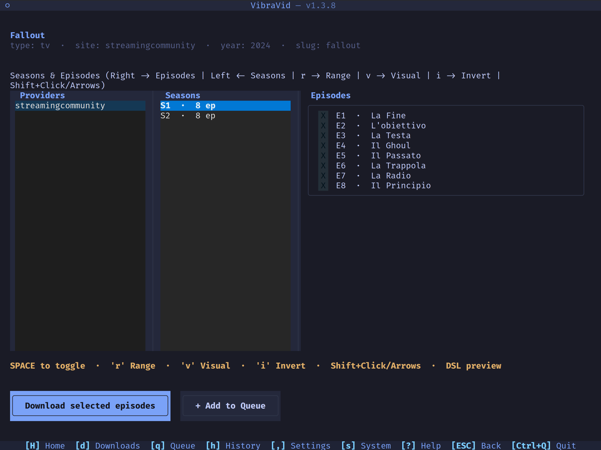

TUI (Terminal User Interface)

Terminal interface built with Textual; no browser needed.
Launch
python tui.py # or: uv run python tui.py / python manual.py --tui
Layout
Every screen has the same frame: a top bar the content, and at the bottom the shortcuts of the current screen above the navigation bar ([H] Home, [d] Downloads, [ESC] Back, [Ctrl+Q] Quit...).
Features
- Global search deduplication: one result per title across all providers, showing every source.
- Multi-provider detail:
[Providers] -> [Seasons] -> [Episodes]columns; switch provider without going back to search. - i18n (IT / EN): detected from the OS language, across all screens.
- Queue & batch manager: add, remove, reorder and retry jobs with custom CLI arguments and tags.
- Live progress: progress, speed, segment counts, track details; open folder / launch file when done.
- System & DRM inspector: external binaries (
ffmpeg,flux,mkvmerge, ...), CDM device status, log viewer, and a Refresh external import button (applies the newest commit of theimp_servicerepositories at once) and an Updates tab (version info, release check cached 24 h, skipped withauto_check_update = false, Download update for binary builds: downloads the matching executable with SHA-256 verification without replacing the running one).
Cover art
Search and detail show the cover of the highlighted title: the film or series poster, the season poster or the episode still from TMDB (then IMDb/TVDB, see metadata_provider), the service's own image as a last resort, and for songs and albums the cover the service returned (Amazon Music, YouTube Music...). Images are cached in .cache/covers.
How it is drawn follows tui_images (DEFAULT):
| Value | Result |
|---|---|
auto |
A real, scaled image if the terminal supports the Kitty or Sixel protocol, otherwise characters (textual-image picks) |
sixel / kitty |
Force that protocol |
blocks |
Half-block characters (two pixels per cell): works in any truecolor terminal but is coarse |
off |
No covers |
Real images work in Windows Terminal 1.22+, WezTerm, kitty and iTerm2, and in VS Code with terminal.integrated.enableImages turned on. They do not work in the legacy Windows console, GNOME Terminal or Warp, and inside tmux only with Sixel enabled. If the cover shows up black or garbled, set tui_images = "blocks".
Screens and shortcuts
| Key | Screen | Description |
|---|---|---|
F1 / H |
Home | Category cards (Film, Series, Anime, Music) and site filter |
F2 |
Search | Global search, deduplicated results, metadata preview |
F3 / d |
Downloads | Live progress table, track inspector, completed downloads |
F4 / q |
Batch Queue | Enqueue jobs, retry failed items, manage CLI batch commands |
F5 / h |
Download History | Completed downloads, output path, re-queue |
F6 / , |
Settings & Services | config.toml sections and, below them, every service of login.toml with ✓ (a credential is set) or · (not set up yet), each field with a note on what it does; Ctrl+S saves the open page |
F7 / s |
System & DRM | Binary checker, CDM device status, logs (r refreshes) |
F8 / F9 / ? |
Help | Shortcut reference |
| Key | Context | Action |
|---|---|---|
ESC / b |
Global | Back one level / close modal |
Ctrl+Q |
Global | Quit |
Enter |
Global | Confirm / open selected item |
↑ / ↓ |
Lists / tables | Move selection |
← / → |
Title Detail | Move between [Providers] ↔ [Seasons] ↔ [Episodes] ↔ [Download] |
Space |
Title Detail | Toggle episode |
a / u |
Title Detail | Select all / clear episodes of the season |
r |
Title Detail | Range-selection modal |
v |
Title Detail | Toggle visual range anchor |
i |
Title Detail | Invert selection |
